Магнитные свойства всех веществ определяются природой микрочастиц (электронов, протонов, нейтронов), обусловливавших структуру вещества, и их взаимодействием. Эти частицы обладают собственным (спиновым) и орбитальным магнитными моментами.Орбитальный момент обусловлен движением электронов в оболочках атомов (молекул) и внутриядерным движением протонов и нейтронов. Обычно магнитными моментами ядер можно пренебречь и считать, что магнетизм атомов (молекул) определяется спиновыми и орбитальными магнитными моментами электронов.
Магнитные свойства среды характеризуются вектором намагниченности, который определяется как результирующий (средний) магнитный момент единицы объема вещества, создаваемый молекулярными токами:
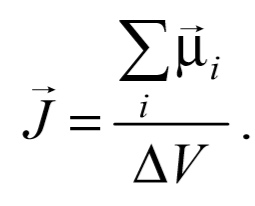
Если ввести средний магнитный момент молекулы μ, то вектор намагниченности равен
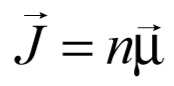
где n − концентрация атомов. Для магнетиков, находящихся в не слишком сильных магнитных полях, магнитный момент элемента объема dV определяется по формуле
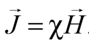
Безразмерная величина χ называется магнитной восприимчивостью , она зависит от природы вещества и его состояния; H – напряженность внешнего поля. Вещества, магнитная восприимчивость которых отрицательная и очень мала 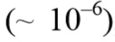, относятся к диамагнетикам. У парамагнетиков χ > 0, ее значения при комнатной температуре лежат в пределах от 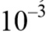 до 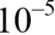.
Вектор индукции результирующего магнитного поля в магнетике
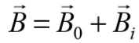
В обоих случаях магнитная проницаемость не зависит от напряженности поля и мало отличается от 1.
Ферромагнетики – это вещества, которые обладают собственной намагниченностью в отсутствие внешнего магнитного поля.Ферромагнетизм характерен в основном для твердой кристаллической фазы вещества.
Среди химических элементов ферромагнитными свойствами обладают переходные элементы Fe, Со и Ni (3d-металлы) и редкоземельные металлы Gd, Tb, Dy, Ho, Er.
Ферромагнитными являются также многочисленные металлические бинарные и более сложные (многокомпонентные) сплавы и соединения этих металлов между собой и с другими неферромагнитными элементами, сплавы и соединения хрома (Cr) и марганца (Mn) с неферромагнитными элементами, например сплавы Cu2MnAl,Au4V, Sc3In и др.
Основные свойства ферромагнетиков, выделяющие их из группы парамагнетиков: а) магнитная восприимчивость ферромагнетиков μ >> 1; б) для ферромагнетиков характерно явление гистерезиса; в) ферромагнетики притягиваются магнитом; г) сильная зависимость магнитных свойств от температуры.
При повышении температуры способность ферромагнетиков намагничиваться уменьшается. При некоторой температуре (которая называется точкой Кюри TК) вещество теряет ферромагнитные свойства и становится обычным парамагнетиком. Для некоторых металлов значения TК приведены в прил. П9.
При температурах ниже точки Кюри в ферромагнетике формируются малые области с высокой однородной самопроизвольной (спонтанной) намагниченностью – домены. Линейные размеры доменов – 1–10 мкм. Образование этих областей связано с тем, что электроны обладают собственным моментом импульса – спином, которому соответствует собственный спиновый магнитный момент.
В определенных условиях спиновые магнитные моменты электронов соседних атомов кристаллической решетки выстраиваются параллельно друг другу, что приводит к большой намагниченности внутри домена.
В отсутствие магнитного поля магнитные моменты доменов ориентированы в пространстве так, что результирующий магнитный момент всего ферромагнетика равен нулю. При наложении магнитного поля ферромагнетик намагничивается, т. е. приобретает отличный от нуля магнитный момент.
Поведение ферромагнетика в магнитном поле характеризуется кривой намагничения, т. е. зависимостью намагниченности ферромагнетика от напряженности внешнего намагничивающего поля H.Для ферромагнетиков эта зависимость имеет сложный вид. На рис. 47.1 представлена кривая намагничения предварительно полностью размагниченного образца. Действие внешнего поля на домены на разных стадиях процесса намагничения оказывается различным.
В сравнительно слабых полях наблюдается смещение границ доменов. При этом происходит увеличение объема тех областей спонтанной намагниченности, моменты которых составляют меньший угол с вектором H за счет областей, у которых этот угол больше, так как последние находятся в энергетически менее выгодном состоянии. В области слабых полей (область 1) указанные процессы обратимы. С увеличением поля процесс смешения границ становится необратимым (область 2), т. е. при выключении поля в ферромагнетике будет сохраняться некоторая остаточная намагниченность.
С ростом Н уменьшается количество энергетически «невыгодных» доменов, вектор намагниченности которых составляет с направлением внешнего поля угол больший ~ 90°. При некотором значении Н эти домены вовсе исчезают. Если поле увеличивается еще больше, то возникает новый тип процесса намагничивания,связанный с поворотом магнитных моментов доменов в направлении H(область 3). Наконец, в сильном поле магнитные моменты всех доменов устанавливаются параллельно полю. В этом состоянии образец имеет наибольший возможный при данной температуре магнитный момент, т. е. намагничен до значения насыщения Jнас. Напряженность внутреннего поля ферромагнетика, соответствующая состоянию насыщения, может значительно превышать напряженность намагничивающего поля.
Зависимость индукции В внутри ферромагнетика от напряженности намагничивающего поля также имеет сложный характер. Вначале с увеличением H индукция возрастает быстро, но по мере намагничивания образца ее дальнейшее нарастание замедляется. Когда собственное поле вещества достигает насыщения,магнитная индукция возрастает по линейному закону в зависимости от напряженности поля: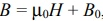, где 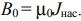
.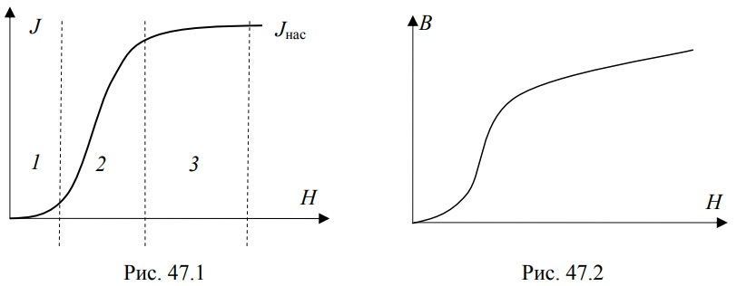
Вследствие нелинейности зависимости В(Н) магнитная проницаемость μ не является постоянной величиной и также зависит от напряженности внешнего поля (рис. 47.3)
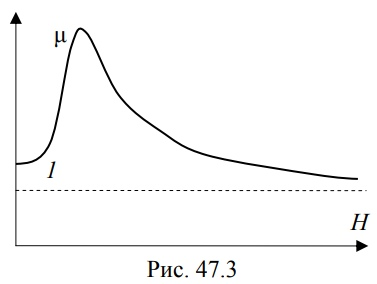
. С увеличением Н магнитная проницаемость сначала возрастает от некоторого начального значения до максимального, а затем уменьшается, асимптотически приближаясь к единице, так как при очень больших напряженностях можно пренебречь слагаемым B0 по сравнению с μ0H. Максимальные значения μ для ферромагнетиков очень велики 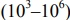.Для ферромагнетиков характерно явление магнитного гистерезиса, т. е. зависимость вектора намагниченности не только от приложенного внешнего поля, но и от предыстории данного образца.Гистерезис проявляется при циклическом перемагничивании ферромагнетика, когда зависимость B(H) приобретает вид замкнутой петли – петли гистерезиса (рис. 47.4)
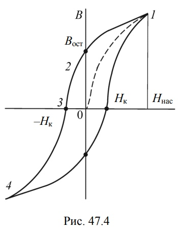
Если вначале образец полностью размагничен, то при монотонном изменении H от нуля изменение индукции B происходит по начальной (основной) кривой намагничения 0–1. После достижения состояния насыщения (точка 1), которому соответствует напряженность поля Hнас, начнем уменьшать напряженность до нуля.Индукция В при этом будет уменьшаться по кривой 1–2. Таким образом, происходит отставание индукции поля в образце от напряженности намагничивающего поля. Вследствие гистерезиса величина B после снятия поля не обращается в нуль, а сохраняет некоторое значение (отрезок 0–2), называемое остаточной индукцией Bост(этим объясняется существование постоянных магнитов). Остаточная индукция обусловлена тем, что и после прекращения действия внешнего поля у части доменов сохраняется преимущественная ориентация их магнитных моментов. Для полного размагничивания (B = 0) образца необходимо приложить противоположно направленное поле. Величина этого поля (отрезок 0–3) называется коэрцитивной силой Hк. При дальнейшем увеличении внешнего поля, противоположного первоначальному, намагниченность образца снова достигает насыщения (точка 4). Возвращаясь постепенно к напряженности намагничивающего поля +Ннас, получим замкнутую кривую, которая называется петлей гистерезиса. Петлю называют максимальной, если напряженность внешнего поля изменяется от –Ннас до +Ннас и обратно.
При напряженности переменного магнитного поля Н < Ннас петля носит название частного цикла. Все частные циклы лежат внутри максимальной кривой гистерезиса. Вершины частных циклов лежат на основной кривой намагничения 0–1. Гистерезис приводит к тому, что намагничение ферромагнетика не является однозначной функцией напряженности намагничивающего поля; оно в сильной степени зависит от предыстории образца, от того, в каких полях он находился прежде.
Площадь петли гистерезиса пропорциональна количеству теплоты, выделяющейся при перемагничивании. Основными характеристиками петли гистерезиса являются остаточная индукция Вост, коэрцитивная сила Нк и площадь петли гистерезиса, характеризующая тепловые потери мощности на гистерезис Р за один цикл перемагничивания: 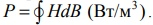